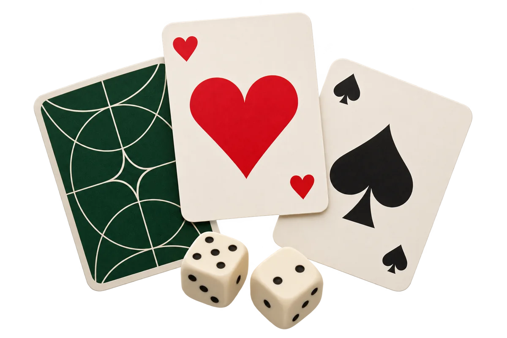

Jeux pour seniors en ligne, par où commencer ?
Six jeux de cartes, de lettres, de dés et de logique, avec le premier geste à faire dans chacun.
 Mots mêlés
Mots mêlés Solitaire
Solitaire Démineur
Démineur Belote
Belote Yams
Yams Huit américain
Huit américain

Six jeux de cartes, de lettres, de dés et de logique, avec le premier geste à faire dans chacun.
De La Ciotat en 1907 à votre écran : comment se joue une mène, pointer ou tirer, et cinq conseils pour mieux pointer.
Son histoire, de l’Italie aux salles des fêtes, les règles de la quine au carton plein, et nos conseils pour y jouer.
D’où viennent les dominos, comment se joue une partie et quatre conseils pour mieux jouer.
D’où viennent les mots fléchés, comment lire les flèches, et cinq conseils pour finir la grille.
L’histoire du jeu de déduction de couleurs, ses règles et quatre conseils pour trouver le code.
L’histoire du pendu, comment y jouer en grand avec une marguerite, et nos conseils pour trouver le mot.
Réglez la taille des cartes, des lettres et des boutons dans la bibliothèque ou pendant une partie.
Créez un favori et retrouvez votre partie sur le même appareil et dans le même navigateur.
Comparez le Solitaire Klondike et le FreeCell, avec un exemple de premier déplacement pour chaque jeu.